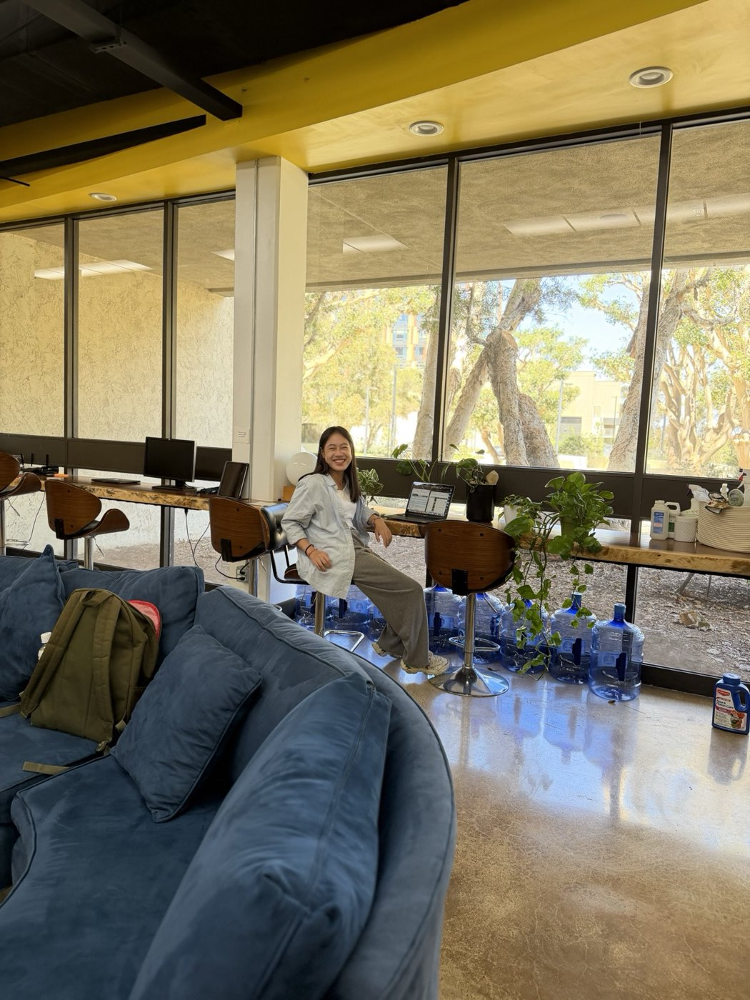

Understanding Cognition Across Physical & Immersive Environments
The Cognitive Science XR Lab at the University of California, San Diego investigates how designed physical & immersive environments influence cognition, behavior, perception & physiological regulation.
Our interdisciplinary research integrates cognitive science, extended reality, human-computer interaction & environmental design to examine how environmental context interacts with attention, learning, behavior & human experience through controlled empirical investigation.
Across projects, the XR Lab uses multimodal methods to investigate how properties of designed environments shape human cognition, behavior & experience.

Research
Our researchInside the lab
All photosPeople
EveryonePrincipal investigator · Professor of Cognitive Science
Doctoral Researcher - Architecture & Neuroscience
Granny Green Project Manager and Interim Lab Manager
Recent work by David Kirsh
Full bibliography- Beyond the Lab: Cognitive Neuroscience in Real‐World ContextsStephan P. Kaufhold, Mia Borzello, Federico Rossano, David Kirsh2026 · Article · Wiley Interdisciplinary Reviews Cognitive Science · cited 1
- What Did My Car Say? Impact of Autonomous Vehicle Explanation Errors and Driving Context On Comfort, Reliance, Satisfaction, and Driving ConfidenceRobert P. Kaufman, Aaron Broukhim, David Kirsh, Nadir Weibel2025 · Conference paper · CHI Conference on Human Factors in Computing Systems · cited 14
- Predicting Trust In Autonomous Vehicles: Modeling Young Adult Psychosocial Traits, Risk-Benefit Attitudes, And Driving Factors With Machine LearningRobert P. Kaufman, Emi Lee, Manas Satish Bedmutha, David Kirsh, Nadir Weibel2025 · Conference paper · CHI Conference on Human Factors in Computing Systems · cited 9
- Humans Select Subgoals That Balance Immediate and Future Cognitive Costs During Physical Assembly PDFFelix J. Binder, Marcelo Gomes Mattar, David Kirsh, Judith E. Fan2025 · Article · Cognitive Science · cited 3
Teaching
The lab teaches in the Department of Cognitive Science.
Visit
Social Sciences Research Building (SSRB), Room 100
9500 Gilman Drive, La Jolla, CA 92093
3 min walk from the bus · 2 min from Scholars Parking · 12 min from the trolley
Interested in the lab?
We welcome undergraduates, graduate students and researchers interested in cognitive science and extended reality.